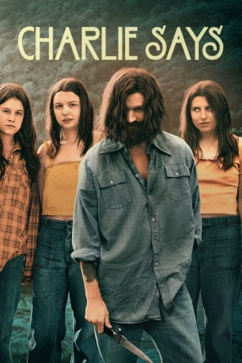

#12101 Charlie Says
 
 IMDB-Wertung: 5.7 / 10
IMDB-Wertung: 5.7 / 10  Metascore: 57
Metascore: 57 
Die drei Frauen Leslie Van Houten, Patricia Krenwinkel und Susan Atkins werden Ende der 60er Jahre zu lebenslanger Haft verurteilt, nachdem sie im Namen des Sektenführers Charles Manson zahlreiche Morde begangen hatten. Die junge Studentin Karlene Faith möchte sie nicht in ihrem Glauben lassen, ihre Taten seien Teil eines grösseren Ganzen gewesen. Sie versucht, in die Psyche der drei Verurteilten einzudringen und zu verstehen, wie ein Mann wie Charles Manson es schaffen konnte, seine Anhänger derart zu manipulieren, dass sie für ihn wie willenlose Marionetten agieren und jeden seiner Forderungen nachkommen.
Jahr: 2018
Dauer: 110 Minuten
FSK: 16
Land: USA Studio: IFC FilmsTonspuren: DTS - ,
Untertitel: Deutsch,
Auflösung: 1080p (1920x808) Größe: 6338 MB
Genre: Drama, Krimi, Biographie
Regisseur: Mary Harron
Drehbuch: Guinevere Turner, Ed Sanders, Karlene Faith
Soundtrack: Keegan DeWitt
Darsteller:
 Hannah Murray als Leslie 'Lulu' Van Houten
Hannah Murray als Leslie 'Lulu' Van Houten- Matt Smith als Charles Manson
- Sosie Bacon als Patricia 'Katie' Krenwinkel
- Marianne Rendón als Susan 'Sadie' Atkins
 Merritt Wever als Karlene Faith
Merritt Wever als Karlene Faith Suki Waterhouse als Mary Brunner
Suki Waterhouse als Mary Brunner- Chace Crawford als Tex Watson
 Annabeth Gish als Virginia Carlson
Annabeth Gish als Virginia Carlson- Kayli Carter als Lynette 'Squeaky' Fromme
- Grace Van Dien als Sharon Tate
 Bridger Zadina als Paul Watkins
Bridger Zadina als Paul Watkins- Julia Schlaepfer als Sandra Good
- Dayle McLeod als Catherine 'Gypsy' Share
- Morgan Melton als Ruth Ann Moorehouse
- India Ennenga als Linda Kasabian
- Aria Taylor als Snake
- Jeremy Lawson als Danny DeCarlo
- James Trevena-Brown als Dennis Wilson
- John Gowans als George Spahn
- Dillon Lane als Gregg Jakobson
- Bryan Adrian als Terry Melcher
- Lindsay Farris als Jay Sebring
- Nathan Sutton als Steve Somewhere
- Tony Armatrading als Guard Carl
- Christopher Gerse als Pete
- Aidan Walsh als Grocery Store Clerk
- Jackie Joyner als Rosemary LaBianca
- Dan Olivo als Leno LaBianca
- Darien Sills-Evans als Bill Morris
- Matt Riedy als Police Chief Davis
- Anthony Traina als Phil
- Tracy Perez als Carla
- Kim Yarbrough als Tina
- Blaine Gray als Golden Globes Guest
- Aaron Leddick als Documentarian / Announcer
- Kimmy Shields als Vicki
- Sol Rodriguez als Gloria
- Danya LaBelle als Barbara
- John Frank Rosenblum als Officer Cole
- Abigail Hunt als Family Member
- Ky Mahone als Family Member
- Emily Taplin als Family Member
 Brianne Brozey als Tourist Photographer (uncredited)
Brianne Brozey als Tourist Photographer (uncredited)- Trevor Brunsink als Shorty Shea (uncredited)
- Laura Denton als Gail (uncredited)
- Joseph Luckay als Prison Guard (uncredited)
- Sophia Rose als Robin (uncredited)
- Cameron Gellman als Bobby Beausoleil
- Christopher Frontiero als Guard Jimmy
- Kimberly Gikas als Kay
Datei: X:\2018(A-F)\Charlie Says (2018, FSK16, 1920x808).mkv seit 05.12.2019
Festplatte: HD 2017(A-Z)-2018(A-F)
 Es gibt insgesamt 151 Filme in der Gruppe '2018(A-F)'
Es gibt insgesamt 151 Filme in der Gruppe '2018(A-F)'